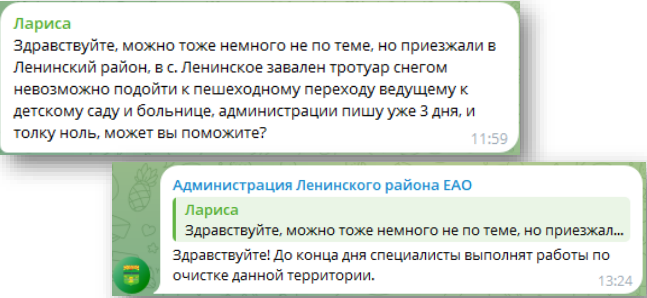
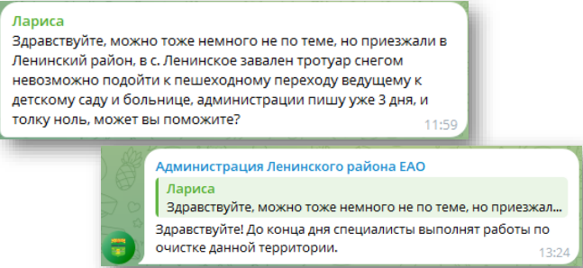

Словарь терминов
Аватар, ава, аватарка
— изображение профиля, которое представляет пользователя или сообщество в сети.
Автопостинг
— автоматическое размещение контента в сообществах и аккаунтах социальных сетей с помощью специальных сервисов.
Аккаунт
— учетная запись пользователя в социальной сети с личной информацией и контентом (фото, видео и пр.).
Активность
— взаимодействие пользователя с контентом. Например, лайк, репост, комментарий, сохранение.
Алгоритм социальной сети («умная» лента)
— искусственный интеллект, который ранжирует контент в социальных медиа и формирует новостную ленту для каждого пользователя в зависимости от его реакций и предпочтений.
Аудит
— анализ эффективности аккаунта или сообщества в социальной сети.
Аутентификация
— проверка подлинности данных владельца аккаунта при входе в социальную сеть.
Бан
— блокировка аккаунта пользователя в социальной сети за нарушение ее правил. Также баном называется ограничение возможностей подписчика сообщества, наложенное его администраторами также за несоответствие внутренним правилам.
Бот
— программа, имитирующая активность пользователя в социальной сети.
Бэкап
— резервное копирование данных (дублирующая копия).
Вайн
— короткий юмористический видеоролик.
Ведение сообщества/аккаунта
— публикация контента в соответствии с медиапланом, работа с комментариями, отслеживание упоминаний, удаление спама, комплекс работ по продвижению.
Верификация
— процесс подтверждения, что аккаунт в социальной сети принадлежит реальному лицу или организации. Отличить верифицированный профиль в соцсети можно по синей галочке рядом с его наименованием.
Виральность
— свойство контента распространяться в социальных сетях без усилий со стороны его создателя.
Вирусный контент
— контент в социальных сетях, которым пользователи активно делятся друг с другом.
Влог
— блог с уникальным видеоконтентом.
Внутренний поиск
— поиск среди аккаунтов/сообществ и контента внутри социальной сети.
Вовлечение
— единица измерения пользовательских реакций в соцсети. Например, лайк, репост, комментарий, сохранение.
Вовлеченность
— количество взаимодействий пользователя социальной сети с контентом.
Гайд
— пошаговая инструкция.
Геймификация
— применение игровых механик в создании контента для повышения вовлеченности пользователей.
Геометка (геотег, геолокация)
— указание местонахождения в формате ссылки с координатами, по которой пользователи могут найти другие публикации с привязкой к этой же локации. Обычно добавляется к посту или истории.
Гифка
— файл в gif-формате, представляющий собой зацикленное анимированное изображение.
Дайджест
— статья с подборкой самых интересных публикаций за определенный период.
Дедлайн
— срок выполнения задачи.
Интересы
— параметр сегментации целевой аудитории в зависимости от предпочтений тематики потребляемого контента.
Инфлюенсер
— авторитетный блогер, чье мнение формирует предпочтения определенного сегмента целевой аудитории
Инфографика
— наглядный графический способ передачи информации.
Инфоповод
— событие, которое может вызвать интерес у пользователей соцсети и стать поводом для создания контента.
Истории (Сторис)
— формат контента, который размещается в соцсети сроком на 24 часа. Отображается в отдельной ленте. Функционал историй дает возможность добавлять текст, музыку, фото, видео, стикеры с опросами, тестами, геолокацией и упоминаниями пользователей.
Карусель
— рекламный пост с несколькими карточками товаров, к каждой из которых можно добавить кнопку с призывом к действию.
Кейс
— описание полного цикла работ по продвижению проекта в социальных сетях с указанием конкретных результатов и выводами.
Клик
— переход на сайт из рекламного объявления с помощью нажатия на ссылку.
Кликбейт
— способ оформления заголовка публикации, который выводит читателя на эмоции, но не отражает фактическое содержание материала.
Комментарий
— мнение пользователя, оставленное под публикацией.
Контент
— текстовый, фото-, видео-, аудиоматериал, который публикуется в социальных сетях.
Контент-маркетинг
— совокупность маркетинговых приемов, в основе которых лежит создание и распространение полезной, качественной и актуальной для потребителя информации с целью завоевания его доверия и привлечения клиентов.
Контент-план в SMM
— составление плана публикаций с датами, временем, тематикой и рубрикатором.
Конкурс
— один из способов продвижения в социальных сетях, предполагает соревнование с целью выявления лучшего участника.
Креатив
— это визуальная и текстовая составляющая объявления в социальных сетях.
Кросспостинг
— публикация одного и того же контента в разных социальных сетях.
Лайк
— знак одобрения в социальных сетях. Термин является общеупотребительным несмотря на то, что в разных соцсетях может называться иначе, например, «класс» или «мне нравится».
Лайв(Стрим)
— онлайн-трансляция в социальной сети.
Лид
— пользователь, совершивший целевое действие. Например, переход на страницу или подписка на аккаунт.
Лид-магнит
— бесплатная услуга или продукт, который предлагается пользователю с целью превращения его в лид.
Лид-форма
— форма сбора контактной информации заинтересованного пользователя.
Лонгрид
— объемный текстовый материал. Может быть дополнен иллюстрациями, инфографикой, видео и ссылками.
Маски
— специальные фильтры, добавляющие спецэффекты к фото или видео с помощью технологий дополненной реальности.
Марафон
— тренинговая или образовательная активность пользователей в социальных сетях. Подразумевает получение заданий, общение между собой и взаимодействие с наставниками.
Масслайкинг
— массовое проставление лайков пользователям с целью распространения информации об аккаунте. Производится вручную или с помощью специальных сервисов накрутки. За использование этого метода продвижения можно получить бан.
Массфолловинг
— массовая подписка на аккаунты или страницы пользователей с целью побудить подписаться в ответ. Производится вручную или с помощью специальных сервисов накрутки. За использование этого метода продвижения можно получить бан.
Масштабирование
— увеличение количества действий при соблюдении всех показателей эффективности.
Медиаплан
— расписание кампаний по продвижению в соцсетях.
Мем
— вирусный контент ироничного или саркастического содержания.
Мессенджер
— приложение для мгновенного обмена сообщениями и файлами.
Микроблогер
— инфлюенсер, у которого до 50 тысяч подписчиков в соцсети. Как правило, у локальных лидеров мнений очень вовлеченная аудитория.
Модерация
— наблюдение за сообществом, поиск и удаление контента, не соответствующего внутренним правилам.
Мониторинг социальных медиа
— поиск, анализ упоминаний об аккаунте и его конкурентах, своевременное реагирование на комментарии. Осуществляется с помощью специальных сервисов.
Мультиссылка
— страница-визитка с блоками информации, контактными данными, ссылками на соцсети, сайты и мессенджеры. Может содержать функционал для записи на прием, сбора отзывов и другое. Создается с помощью специального сервиса.
Накрутка
— способ искусственного увеличения количества подписчиков или реакций на контент, верный способ получить бан.
Обложка
— горизонтальный графический элемент в шапке сообщества.
Органика
— метод продвижения за счет качественного и уникального контента без использования рекламы.
Отложенный постинг
— 1 значение: внутренняя функция социальных сетей, которая позволяет сформировать контент и запланировать его публикацию в определенное время. Такую возможность предоставляет, например, ВКонтакте, Одноклассники и Телеграм.
2 значение: специальный сервис, который дает возможность публикации заранее созданного контента в установленное время.
Охват
— количество уникальных пользователей, которые увидят опубликованный контент. Персональный (личный) бренд — образ персоны, закрепленный в сознании целевой аудитории, например, образ главы района.
Поднять пост
— платный метод продвижения конкретной публикации. Для рекламной кампании не создается отдельный пост, а используется уже размещенный в сообществе.
Показ
— сумма просмотров рекламного объявления или публикации. Один пользователь может просмотреть пост несколько раз.
Пост
— публикация текстового, фото-, видео-, аудиоконтента в социальных сетях.
Просмотр
— общее количество просмотров конкретной публикации. Не путать с охватами и показами. Охват считает уникальных пользователей, которые просмотрели публикации, а показы - сумму всех просмотров!
Рассылка
— автоматизированная отправка сообщений тем пользователям соцсети, которые подписались на нее.
Репост
— копирование публикации из другого аккаунта или сообщества на свою страницу с сохранением данных автора поста.
Репутационный менеджмент
— комплекс стратегических мер по формированию, поддержанию и защите репутации бренда.
Референс
— авторский контент, который используется в качестве примера для вдохновения.
Сегментация
— разделение целевой аудитории на группы по определенным признакам. Например, по полу, возрасту, интересам и пр.
Синемаграфия
— зацикленное видео, где часть картинки обездвижена. Выглядит, как фотография, на которой двигаются несколько элементов.
Сокращенная ссылка
— ссылка на интернет-сайт, которую с помощью сервиса сокращают без потери содержания.
Социальные медиа
— социальные сети, блог-платформы, видео-хостинги, форумы, где пользователи могут размещать контент, выражать свое мнение о нем и общаться между собой.
Спам
— массовая рассылка сообщений преимущественно рекламного характера в личные сообщения или комментарии.
Статус «Госорганизация»
— отметка подтверждает, что это официальное сообщество государственного органа, органа местного самоуправления или подведомственной организации, созданное для размещения в нём достоверной информации о своей деятельности.
Стикер
— изображения с надписями или без них, которые позволяют при общении в социальных сетях быстро выражать эмоции и чувства.
Троллинг
—вызывающее провокационное и оскорбительное поведение в социальных сетях.
Фейк
— аккаунт в социальной сети, который по факту ведет другой человек, а не тот, чьи данные опубликованы в профиле.
Фидбек
— переводится с английского как обратная связь. Употребляется как синоним отзыва, мнения потребителя.
Фильтрация базы
— процесс выбора из базы аккаунтов по определенным параметрам для выполнения определенной задачи.
Флуд
— комментарии не по теме публикации или сообщения не по теме дискуссии.
Хайп
— агрессивная и навязчивая шумиха в социальных сетях. Может сочетаться с провокациями и грубым нарушением общепринятых этических норм.
Хейтер
— пользователь социальных сетей, выражающий свою неприязнь к кому-либо в комментариях и личных сообщениях.
Хештег
— кликабельная метка, позволяющая структурировать контент и облегчить его поиск в конкретной социальной сети. Начинается со знака #
Целевая аудитория
— группа пользователей социальной сети, объединенных общими признаками, которым может быть интересен продвигаемый бренд или проект.
Целевое действие
— действие, которое должен совершить пользователь соцсети для достижения желаемого результата. Например, подписаться на аккаунт или вступить в группу.
Чат-бот
— программа для автоматизации рутинных коммуникационных операций с целью сокращения времени на взаимодействие с клиентом.
Челлендж
— вызов, который один пользователь соцсети предлагает другому в формате фото, видео или истории.
Ядро аудитории
— самая активная часть аудитории, которая чаще всего взаимодействует с контентом сообщества или аккаунта.
SMM
— весь комплекс мероприятий по продвижению в социальных сетях.
«Термины Вконтакте»
Donut
— способ монетизации сообщества. Пользователи платят за подписку, администрация публикует для них эксклюзивный контент.
Биржа
— официальная площадка ВК для покупки и продажи рекламных постов в сообществах.
Виджет для сообщества
— блок данных в сообществе с установленным внутри описанием. Например, для персонального приветствия подписчиков. Могут быть платными и бесплатными.
Витрина товаров
— функционал соцсети, позволяющий создавать каталоги товаров внутри сообществ.
Вики-разметка
— система редактирования информационных веб-страниц внутри соцсети. Позволяет использовать перекрестные ссылки.
Вступления/подписки/установки
— количество вступивших в группу, подписавшихся на публичную страницу или установивших приложение.
Встреча
— сообщество, привязанное к началу и завершению события. Участники получают напоминание о грядущем событии.
Группа
— универсальный вид сообщества с самым большим функционалом. Подписчики могут общаться между собой, размещать свой контент и комментировать посты администратора.
Динамическая обложка
— интерактивная информационная доска в сообществе. Замещает собой графическую обложку. Создается с помощью специального сервиса.
Дон
— подписчик, оформивший платную подписку в сообществе и получивший возможность просматривать эксклюзивный контент.
Клип
— короткое вертикальное видео, размещается в отдельной ленте рекомендаций.
Мероприятие
— см. Встреча
Маркет-платформа
— см. Биржа
Паблик
— вид сообщества, подходящий для информирования подписчиков о новостях от имени администрации. Меньший функционал, чем у группы. Подписка на паблики отображается в профиле пользователей в разделе «Интересные страницы».
«Предложка»
— функция соцсети, позволяющая пользователям предлагать свои посты для публикации от имени сообщества.
Премодерация
— проверка рекламных записей модераторами соцсети перед размещением в сообществах. В таргетинге это проверка рекламных объявлений модераторами соцсети перед запуском кампании.
Прометей
— алгоритм искусственного интеллекта для продвижения создателей авторского контента. В течение 7 дней публикации получают повышенные охваты.
Реклама в сообществе
— метод платного продвижения. Представляет собой размещение поста с пометкой «реклама» в сообществе.
Промопост
— публикация, которую можно продвигать за пределами сообщества. Может повторять оригинальный пост, но с пометкой «реклама».
Публичная страница
— см. Паблик
Сообщество
— объединение подписчиков соцсети. ВКонтакте позволяет создавать три вида сообществ: группа, паблик и встреча.
«Сохраненка»
— медиафайл, который пользователь сохраняет в специальном разделе профиля соцсети, но не скачивает на устройство.
ТГБ (текстово-графический блок)
— вид рекламного объявления, состоящий из заголовка, текстового описания и иллюстрации.
ТП
— техническая поддержка соцсети, которая отвечает на вопросы о работе сайта и мобильного приложения.
Френдинг
— добавление пользователей-представителей целевой аудитории в друзья. Считается методом бесплатного продвижения.
«Термины «Одноклассники»
Атака тысячников
— быстрое создание 1000 тем в группы для вытеснения основных обсуждений.
Гости
— посетители страницы пользователя соцсети. Отображаются контактные данные, дата и время посещения.
Маска
— пользователь без аватара.
Мульт
— пользователь, создающий страницу с вымышленными данными. Делятся на конструктивных и негативных. Первые создают такие профили, например, для работы. Вторые — для троллинга, флуда (малосодержательные и нетематические сообщения на форумах и в чатах) и рассылки спама.
Невидимка
— возможность посещать страницы пользователей в режиме инкогнито. Соцсеть взимает плату за данную услугу.
Псевдореал
— см. Мульт (конструктивный)
Реал
— пользователь соцсети с настоящими контактными данными и фотографией профиля. В случае утраты пароля может восстановить доступ к профилю с помощью паспорта.
«Термины Telegram»
Бот
— автоматизированная программа для обработки информации.
Канал
— сообщество в соцсети, где публикуются только сообщения автора.
Пин
— закрепленный пост на канале.
Подборка
— рекламный пост, состоящий из перечня ссылок на каналы по определенной тематике. Размещается платно или на условиях взаимопиара.
Пост
— публикация на канале.
Реакция
— интерактивная кнопка под постом для выражения эмоций подписчиков.
Стикерпак
— набор тематических стикеров. Их можно создать самому и использовать для продвижения своего канала.
Ключевые месседжи (англ. Сообщение)
Ключевые месседжи — это смыслы и посылы, которые госпаблик администрации доносит до подписчиков. Важно, чтобы они соответствовали интересам целевой аудитории.
-
1. Администрация заботится о жителях, создает комфортные условия для людей в ключевых сферах. Это могут быть вопросы благоустройства территории, развития инфраструктуры, охраны окружающей среды, социальной защиты населения, экономического развития региона и многие другие.
-
2. Администрация открыта к диалогу с жителями. Любой человек может задать вопрос, высказать мнение, поделиться предложением и получить ответ от местных властей.
-
3. Госпаблик администрации – главный паблик, который транслирует актуальную повестку района.
-
4. Контент не должен отталкивать подписчиков (например, длинным, сплошным текстом, который визуально ничем не разделен), а наоборот привлекать и удерживать внимание (контент надо разбавлять и постоянно модернизировать, придумывая что-то интересное и новое)
Какая целевая аудитория (ЦА) у госпаблика администрации:
- Широкая ЦА: все жители муниципалитета
- Наиболее активные подписчики: взрослые, пенсионеры, активисты и молодежь
Контентная политика
Основу контента должны составлять значимые и актуальные для целевой аудитории новости о работе администрации, которые будут интересны подписчикам.
-
Создавайте уникальный контент в разных форматах: как официальный, так и развлекательный;
-
Рассказывайте об уникальных особенностях муниципального образования, результатах реализации нацпроектов на вашей территории, делитесь афишей мероприятий;
-
Делитесь новостями муниципалитета, повесткой Губернатора, интервью с известными людьми района, проводите прямые эфиры с чиновниками и т.д;
-
Подавайте контент в информационном стиле, адаптируйте его для разных соцсетей. Запускайте собственные акции, флешмобы, социальные и имиджевые проекты;
-
Проявляйте заботу и эмпатию к жителям муниципалитета;
-
Подчеркивайте близость не только к подписчикам, но и к жителям в целом. Показывайте социальную роль администрации, чаще демонстрируйте личное участие представителей власти во всех внутренних и внешних процессах района;
-
Будьте открыты и не уходите от диалога, прислушивайтесь к мнению аудитории.
Дизайн
Контактная информация, дизайн и качественное оформление сделают ваше сообщество удобным и узнаваемым для людей.
-
Заполните информацию о сообществе в шапке, поделитесь адресом и контактной информацией.
-
Ваше название должно быть простым и понятным любому.
-
Создайте единый стиль визуального оформления госпаблика (шапка, аватарка, обложка, ПОС-платформа обратной связи).
-
Периодически изменяйте оформление, можно менять стиль ПОС, обложку в преддверии предстоящих праздников не меняя при этом символику госорганизации.
-
Постепенно заполняйте все разделы: видео, фото, ссылки, контакты.
Для привлечения большей целевой аудитории в госпаблик администрации размещайте QR-код на информационных стендах. Жители смогут отсканировать его, перейти в ваш госпаблик, ознакомиться с информацией и подписаться.
Кизнерский район и Людиново имеют общее оформление под тематику праздника(в данном случае нового года), при этом не забывают про единый дизайн инструментов ПОС. Изменяют их совместно с общей шапкой паблика.
Ленинский район не имеет единый стиль оформления обложки, аватарки и инструментов ПОС, что создает отталкивающее впечатление.
Контент-план
Контент-план – это план-график выхода публикаций в сообществе. Контент-план должен быть, и он должен быть не в голове, а в виде документа. В контент-плане следует указывать дату, тему и формат постов.
Для ведения плана подойдет любой редактор таблиц (Exсel, Яндекс 360), а если вам так удобнее – Word.
Контент-план нужен для вашего удобства:
- Работа «по рельсам» – минимум авралов.
- Возможность действовать на опережение, готовить «консервы» – запасной контент, который вы сможете использовать, когда не будет новостей или времени создавать новый.
- Гибкость: всегда можно что-то убрать или добавить.
Пример контент-плана на 1 неделю. Присутствует название поста, краткое описание и тип контента, который выделен определенным цветом, что помогает визуально разделять посты.
Федеральная повестка
Публикация новостей о работе муниципалитета – это важно и правильно. Ваш госпаблик также должен стать площадкой информирования людей о главных федеральных и региональных решениях, касающихся тематики паблика и интересов вашей аудитории.
Федеральные/ региональные поводы нужно сопровождать местными подробностями – это называется «приземлением» повестки.
Время появления федеральных и региональных поводов не всегда можно точно предсказать, поэтому будьте готовы адаптировать контент-план.
Ваша аудитория должна «примерять» федеральные инфоповоды на себя и видеть пользу от федеральных решений. Помогите ей в этом!
-
Добавляйте в региональные и федеральные поводы местную фактуру – расскажите историю конкретного человека, проблему которого удалось решить.
-
Возьмите комментарий по теме у местного лидера мнения, которому доверяют люди.
-
Меньше денежных сумм. Вместо «выделено N млн по такой-то программе» напишите, сколько учреждение получит инвентаря, какие работы пройдут по его ремонту или обновлению.
Конструктор поста
 Новости
Новости
 Прямые эфиры: события, интервью с чиновниками
Прямые эфиры: события, интервью с чиновниками
 Повестка губернатора
Повестка губернатора
 Решение локальных проблем
Решение локальных проблем
Форматы контента:
-
Фото/фотоальбом + текст
-
Видеоролик + подводка
-
Карточка/карточки + текстовая подводка
-
Мем + текст
-
Статья + текстовая подводка
-
Подкасть аудио/видео
-
Сводка основных понятий (текст + фото или видео + подводка)
-
Прямой эфир + текстовая подводка
-
Клип
-
Истории/Серия историй
-
Видеоопрос людей + текстовая подводка
-
Интервью (статья/видео) + текстовая подводка
-
Репортаж (текстовый/видео)
Как писать пост
-
1.Определите цель публикации: прежде чем начать, уточните, какую информацию вы хотите донести до аудитории. Это может быть новость, объявление, мероприятие или информация о работе администрации.
-
2.Создайте заголовок: напишите краткий и информативный заголовок, который привлечет внимание и отразит суть поста. Заголовок должен быть ясным и понятным и отвечать на вопросы ЧТО? ГДЕ? КОГДА?
-
3.Напишите основной текст:
- Структурируйте информацию: Разбейте текст на абзацы для лучшей читабельности. Используйте простые и понятные фразы.
- Избегайте сложных терминов: пишите доступным языком, избегая официального стиля и сложных формулировок.
- Добавьте эмодзи: используйте эмодзи для визуального оформления текста, чтобы сделать его более привлекательным.
-
4.Добавьте визуальный контент:
- Добавьте изображения или видео, которые иллюстрируют вашу тему. Это может быть фотография мероприятия, графика или инфографика.(см. 8 принципов качественного контента)
- Убедитесь, что все изображения имеют хорошее качество и соответствуют теме поста.
-
5.Используйте ссылки: если в посте упоминаются внешние ресурсы (например, статьи СМИ или документы), добавьте ссылки на них для удобства пользователей.
-
6.Добавьте интерактивные элементы, если необходимо (см. ГЕЙМИФИКАЦИЯ)
-
7.Запланируйте публикацию: - Определите дату и время публикации поста. Убедитесь, что он будет опубликован в подходящее время для вашей аудитории. Помните, что посты проходят модерацию, поэтому планируйте публикацию заранее.
-
8.Проверьте текст перед отправкой: прочитайте пост несколько раз, чтобы убедиться в отсутствии орфографических и грамматических ошибок. - Убедитесь, что вся информация актуальна и точна.
-
9. Анализируйте результаты: после публикации отслеживайте статистику (количество просмотров, лайков, комментариев), чтобы оценить эффективность вашего поста и скорректировать будущие публикации.(см. АНАЛИТИКА)
Написан сплошной текст, который визуально ничем не разделен.

Текста много, но грамотно разделен, что создает легкость при прочтении. Использование анимированных эмодзи, распределяют внимание, что способствует лучшему восприятию информации.
Сторителлинг
Рассказывайте о событиях через истории людей:
-
Такой формат предполагает достаточно длинные тексты, но они должны быть написаны простым языком и читаться «на одном дыхании».
-
Визуал используйте умеренно, для длинных рассказов достаточно 1-2 фотографий.
-
Подберите привлекательный заголовок, чтобы вызвать желание прочитать текст до конца.
Душевный рассказ о ветеране Великой Отечественной Войны
8 принципов качественного контента
1. Живой язык
Адаптируйте официальный стиль под разговорный, сохраняя деловые рамки
-
Чем больше текст, тем меньше людей его прочитают. Максимум – три небольших абзаца.
-
Обязательно разделяйте текст на абзацы, а лучше разделять пустой строкой, структурируйте его.
-
Можно использовать эмодзи, но не более 10 в одном посте.
-
Не используйте длинные предложения и сложные обороты. Забудьте причастия и деепричастия.
-
Пишите просто. Представьте, что вы рассказываете новости вашим знакомым.
-
Удаляйте из текстов все канцелярские обороты (свойственны стилю официальных бумаг и документов). Чистоту и читаемость текстов можно быстро и легко проверить с помощью сервиса «Главред».
-
Помните, что уместный юмор и образный язык – залог интереса аудитории.
Использованы эмодзи. Текста нормальное количество, который разделен визуально абзацами. Текст написан в стиле обращения к подписчикам, что создает комфортную атмосферу, без строгости и официоза.
Большое количество текста. Текст представлен в виде отчета, а не поста. Отсутствуют эмодзи.
2. Качественные видео
Видео – самый популярный формат контента в соцсетях. Помните, что большинство смотрит их с телефона, поэтому – длительность небольшая, текст краткий, элементы крупные. Для монтажа можно использовать любые редакторы, например, Capcut, Inshot, Movavi и любые другие. (интерфейс и инструменты редактора желательно отработать и изучить, используя свои личные исходники. Создайте видео по шаблону, который предлагает вам видеоредактор в режиме обучения. Попробуйте смонтировать видео для себя. Всем известно, что в процессе изучения (на практике) лучше всего запоминается информация)
-
Для паблика администрации подходит информационный ролик с титрами.
-
Технические требования к информационным роликам: квадратный или горизонтальный формат (в редких случаях вертикальный), наличие титров, фоновая музыка. Поверьте, это удобно пользователям.
-
Идеальный хронометраж – ± 1 минута.
-
Призыв к действию в конце ролика: «ставь лайк», «делись с друзьями».
-
Выделите ключевые тезисы в титрах полужирным или цветом.
-
Не злоупотребляйте видеосюжетами. Соцсети – не телевизор.
-
Устраивайте небольшие по длительности прямые эфиры с ответами на вопросы посетителей и поклонников во «ВКонтакте» и других соцсетях.
-
Приглашайте на эфиры Губернатора, представителей исполнительной власти, лидеров общественных мнений, экспертов.
В видео присутствуют детали, которые погружают в атмосферу мероприятия. Зафиксированы положительные эмоции жителей. В меру использованы эффекты и хорошо подобрана музыка.
Видео слишком короткое, в котором не отражен смысл текстовой подводки поста. Отсутствует стабилизация из-за чего картинка дрожит, интереса не вызывает.
3. Качественные фото
Скучные фотографии и картинки из интернета не интересны аудитории. Люди ставят лайки ярким и «неформальным» кадрам.
-
Делайте живые фото: яркие и качественные снимки с необычных ракурсов, эмоциональные кадры.
-
Используйте собственный уникальный визуальный стиль (определенные фильтры, которые вы используете часто, стикеры или текстовые плашки на фото должны соответствовать вашему стилю обработки). Обработанная фотография с мобильного лучше заимствованных материалов.
-
Применяйте единый стиль для оформления фотографий и дизайнерских карточек с фотографиями (например, постер-анонс (предварительное оповещение о каком-либо событии) к празднованию Дня матери).
-
Проверяйте посты перед публикацией и удаляйте «ляпы» (неудачные кадры) в предпросмотрах. Внимательно следите за закрытыми глазами и другими обидными мелочами людей на фото. Это важно, будет меньше проблем!
-
Если у вас есть только постановочные кадры, то лучше сделать инфографику (визуальное представление данных в виде схем, текста, картинок).
Фотографии обработаны некачественно, также позы и расположения людей оставляют желать лучшего. Рабочая одежда, невыгодные ракурсы людей строго недопустимы!
Фото обработаны в едином стиле(едином фильтре), также помимо общего плана присутствуют детали, которые важны не меньше.
4. Карточки и инфографика
Инфографика — это визуализация информации. Используйте ее тогда, когда информация сложная и ее много.
-
Придерживайтесь правила «одна карточка — один тезис».
-
Чем меньше текста и проще оформление, тем лучше.
-
Стремитесь к тому, чтобы по картинке все было понятно без слов. Это называется «визуальный месседж»
-
Большинство людей смотрят посты на смартфоне, текст и графика должны быть видны без приближения.
Сайты для помощи: SUPA.ru, Flyvi.oi, Renderforest.com, Visme, creately.com – эти сервисы помогут в создании карточек и инфографики. Они платные, но имеют бесплатные ограничения, которыми можно работать.
Так как карточек до 10 штук в одном посте, важно не перепутать последовательность карточек для лучшего понимания информации.

5. Геймификация
Это использование игровых механик в неигровых контекстах с целью повышения вовлечённости.
Кроме вовлеченности, элементы геймификации в контенте сообщества помогут достигнуть еще нескольких целей:
-
Усиление контентной политики: Это дополнительный вариант взаимодействия, который увеличивает ценность контента для пользователей.
-
Стимулирование аудитории: Игровые элементы могут стимулировать пользователей делиться контентом и привлекать новых подписчиков.
-
Создание сообщества: Вовлекающие активности могут способствовать формированию лояльного сообщества вокруг госпаблика.
Соревновательные активности
Рейтинг подписчиков (VK) – виджеты (маленькие программы, которые выполняют одно несложное действие), с помощью которых считаются реакции (лайки и комментарии), которые оставил подписчик.
Таким образом у подписчиков срабатывает желание быть первыми. Это желание усиливается особенно тогда, когда есть приз.
Колизей – рейтинг активности ВК. Полезный инструмент, который поможет администратору интегрировать на станицу госпаблика интересные виджеты. (первые 7 дней бесплатно, далее 199Ꝑ)
Примечание: всегда можно обращаться к кураторам ЦУР ЕАО. Они смогут помочь и объяснить, как правильно использовать те или иные инструменты.
Челленджи и флешмобы
Хорошо спланированный челлендж (challenge – «вызов») может стать вирусным. Люди будут делиться им со своими друзьями, что способствует органическому распространению контента и продвижению сообщества.
Флешмоб в госпаблике – это формат для привлечения внимания к важным событиям и темам. Участники флешмоба делятся фотографиями, видео или другими материалами, связанными с идеей мероприятия.
Интерактив
Это интерактивные форматы, которые помогают вовлечь аудиторию и повысить её активность.
Предсказание
Нужно собрать 10-15 вертикальных картинок с фразами, фильмами, цитатами, шутками, пожеланиями (желательно, чтобы картинки были в одном стиле) и склеить их в любом видеоредакторе (Capcut, Inshot, Movavi и любые другие). Переход между кадрами меньше секунды. Подписчик делает скрин с тем, что ему выпадет, и делится этим в комментариях.
Такой интерактив можно адаптировать под любую тематику или праздник.
Игра с эмодзи
Загадать название города, слова и тд по первой букве эмодзи. И отгадать то, что придумали другие. Каждая буква – отдельный эмодзи, название которого начинается с КАЖДОЙ БУКВЫ.
Например, слово БУСИНА – можно написать используя эмодзи:
-
Барабан🥁
-
Утка🦆
-
Солнце☀️
-
Игла🪡
-
Нос👃
-
Арбуз🍉
Угадай где нейросеть, а где настоящий предмет!
Опросы с картинками, где надо угадать, какой рисунок выполнен с помощью нейросети, а какой является настоящим снимком. Этот интерактив развернет в комментариях настоящее расследование, а правильно подобранное противопоставление изображений заставит пользователей рассуждать и спорить.
Угадай по смайлам
Загадайте фразу и напишите ее используя эмодзи и предложите участникам сообщества угадать. Ответ даем в комментариях. Пример
Например, угадать мультфильм по эмодзи. Пишем эмодзи лупа 🔍 и рыбка 🐟. Это говорит о мультике "В поисках Немо".
Тематические посты
Тематические посты, посвященные праздникам, могут значительно повысить вовлеченность аудитории. Например, в преддверии Дня кошек можно рассказать об истории этого праздника и разместить в карточках фото кошек.
Если знать, что точно любят подписчики, то можно бить контентом прямо в его сердечко. А что будет, если предложить подписчикам поделиться фотографией своего котика в комментариях? Ответ: серия комментариев с высокой активностью.
Поводы для гордости
Достижения земляков вызывают чувство гордости и желание оставить реакцию. Кроме того, посты со знакомыми лицами хочется показать друзьям или репостнуть к себе на страницу. Важно освещать тему СВО. Для этого отлично подойдет рубрика «Герой нашего времени» о подвигах жителей региона. Можно использовать посты в формате интервью.
Примечания к интерактиву
В госпаблике района должен быть не только серьезный контент о работе власти, но и более легкий. Делитесь тем, что отличает ваш муниципалитет от остальных – живописные виды, особенности речи, интересные места и т. д. Подписчики охотно оставляют реакции на посты с пожеланием доброго утра/вечера и фото любимого села.
Интеллектуальные игры
Найди предмет
Что спрятано за черным квадратом? Такая активность отлично подойдет для учреждений культуры и образования. Но можно придумать и другие варианты!
Или можно на фото спрятать нужный вам объект путем наложения и уменьшения прозрачности объекта. Для этого подойдет любой фоторедактор, например Picsart, Google Фото, Snapseed и другие.
Головоломки и или загадки
В честь приближающегося события или праздника, можно публиковать посты с различными головоломками или загадками Например, в честь наступающего года можно постить загадки, связанные с данным праздником, а ответы будут в комментариях.
Филворды
Это сетка с проставленными буквами, где нужно найти слова. Филворд часто встречается в журналах, развлекательных пабликах, но его можно адаптировать и под любую сферу госпаблика.
-
1. Зарегистрируйтесь на сайте по QR-коду.
-
2. Подтвердите свою регистрацию в письме, которое придет на вашу почту.
-
3. Вернитесь на страницу сайта.
-
4. Выберите язык и размер поля.
-
5. Введите нужные слова (не более 15).
-
6. Установите или уберите необходимые галочки («не показывать список слов», «имя-фамилия», «добавить страницу с ответами»).
-
7. Нажмите «Сформировать» и «Загрузить».
-
8. Готовый филворд откроется в формате PDF.
-
9. Далее вы можете сделать скриншот или скачать и конвертировать его в нужный формат.
Викторина/опрос
Социальные сети давно внедрили такой инструмент как опрос в паблики и аккаунты.
Его можно сделать, когда вы создаете новый пост, нажав на «скрепку» и выбрав инструмент «опрос». Это даст возможность пользователям принять участие в интерактиве, отвечая на вопросы разного содержания (например, исторический опрос приуроченный к определенному событию – такой как Юбилей области).
Голосование может быть не только на важные темы (благоустройство территории, транспорт и т. д.), но и затрагивать актуальные для аудитории эмоциональные вопросы.
Найди отличия
Можно использовать фото природы района или другие достопримечательности, тем самым у людей возникнет намного больше интереса к действительности.
Можно взять исходное фото и в редакторе изменить цвет, форму или наличие любого объекта. Тем самым создать определенное количество отличий.
Кто сможет угадать место?
Размещение исторического фото места известного среди жителей района с предложением угадать его. (Например, можно взять архивные фотографии здания, которого уже не существует и предложить отгадать, где оно находилось и что сейчас стоит на этом месте. Пользователям всегда интересны исторические снимки).
Обязательная повестка
Отработка обращений граждан
Показывайте, что администрация слышит жителей и принимает необходимые меры. Также не забывайте отвечать подписчикам на комментарии.
Посты с хоз.повесткой и отработка обращений граждан представляют в глазах жителей отчетность о проделанной работе, которая подкреплена фактами.
Важно демонстрировать не только готовый результат, но и сам процесс ремонта значимых зданий, дорог и т. д. в формате сторителлинга. Подкрепляйте текст фотографиями и видео.
Полезный контент
К такому контенту можно отнести: инструкции, как получить выплату; изменения в работе транспорта и т.п. Такой контент сохраняют и делятся им с друзьями.
ПРИМЕЧАНИЯ К РАЗДЕЛУ ГЕЙМИФИКАЦИЯ В ЦЕЛОМ!
Механики вовлечения и конструктивный диалог повышают доверие вашей аудитории:
-
Обращайтесь к аудитории, ведите с ней диалог, задавайте вопросы.
-
Просматривайте, какие новости предлагают люди, и иногда публикуйте пользовательский контент.
-
Проводите опросы и голосования.
-
Организуйте конкурсы и флешмобы.
-
Публикуйте записи, в которых реагируете на комментарии к предыдущим постам.
-
Призывайте к действиям. Люди ответят лайками, комментариями и репостами.
Полезные ссылки:
- Госпаблики-Лучшее — канал с новостями о госпабликах, с удачными кейсами, полезными практиками.
- Госпаблики – муниципалитет – примеры и разборы кейсов пабликов вашей сферы.
- Продвижение — полезные советы по ведению соцсетей, тренды и подборки сервисов для создания контента, секреты продвижения в соцсетях.
- Брендер — бот для создания карточек.
- Гострайтер — бот, который помогает писать и редактировать посты.
- Digital Календарь – календарь инфоповодов и событий в формате чат-бота.
6. Работа с комментариями
В госпаблик администрации люди чаще всего приходят за консультацией. Пользователи интересуются сроками ремонта дорожного полотна, графиком открытия новых детских площадок, расписанием приемных дней представителей администрации. Важно настроить эффективную коммуникацию со своими подписчиками. Отсутствие обратной связи в комментариях влечет негативную реакцию пользователей, люди чувствуют себя ненужными.
-
Постарайтесь увидеть всю картину целиком. Просмотрите всю комментарийную ветку, о чем написан пост, в котором автор оставил жалобу или свой вопрос.
-
Поставьте себя на место автора. Задайте себе вопрос: "Почему он говорит об этом? Что именно его интересует? Что не даёт ему покоя?". Только поняв истинный мотив человека, вы сможете дать тот самый ответ, который ему так необходим.
-
Ответ должен начинаться с приветствия.
-
К автору необходимо обращаться «Вы».
-
Ответ должен быть простым и понятным, вежливым и без канцеляризмов.
-
Ответ должен быть информативным, отвечать на запрос автора.
-
Допускаются позитивные ненавязчивые эмодзи.
-
В ответе должны содержаться меры, сроки или любая другая информация.
-
Когда автор задает конкретный вопрос, он ожидает услышать четкий ответ. Не стоит отправлять человека искать ответ на свой вопрос по ссылке.
-
Бывают случаи, когда в сообщении автора не содержится необходимой информации для решения вопроса, тогда следует уточнить детали у автора.
-
Если в сообщении содержится несколько вопросов, то важно прокомментировать каждый вопрос.
-
Перепроверьте себя. После того, как вы уже подготовили ответ, прочтите его несколько раз. Проверьте, всё ли в нём будет понятно обычному человеку? На все ли поставленные вопросы вы ответили? Нет ли в нём речевых ошибок? Вся ли необходимая информация присутствует в вашем ответе, при перенаправлении человека в другую инстанцию.
 

7. Истории и VK клипы
Истории – это популярный формат, который нужно использовать по максимуму. Особенность таких видео в том, что они висят в ленте 24 часа. Это дает преимущество актуальным новостям или анонсам, которые уже на следующий день будут не уместны.
-
Делайте истории вертикальными и на весь экран.
-
Пишите крупно, чтобы текст был читаем с телефона.
-
Используйте живые кадры и динамичные короткие видео.
-
Добавляйте эффекты, свайпы (англ. swipe – проводить не отрывая), голосования в истории, вопросы, тесты и другие «фишки».
-
Сохраняйте важные истории, распределяйте их по рубрикам(событиям), ставьте обложки/главную заставку.
«VK Клипы» – сервис для создания и просмотра коротких вертикальных видеороликов на самые разные темы.
-
У видео есть ограничение по продолжительности – от трех секунд до трех минут. Для успешности ролик должен быть динамичным и захватывать с первых кадров.
-
В клипах часто используются популярную музыку и звуковые эффекты, и это влияет на их успешность.
-
Клипы часто сопровождают субтитрами, которые дублируют или дополняют звук.
-
Есть «умная» лента: алгоритм определяет, что интересно пользователю, и предлагает релевантный контент, им могут стать ваши видео.
Краткая инструкция по публикации VK Клипов для госпаблика:
-
1. Доступ к разделу Клипов: Откройте раздел с клипами в приложении ВКонтакте или в веб-версии на компьютере.
-
2. Создание клипа:
-
Для мобильного приложения: Нажмите кнопку «Создать» или «Снять» в нижнем меню.
-
Для веб-версии: Нажмите кнопку «Опубликовать клип» в правом верхнем углу.
-
-
3. Выбор аккаунта: определите, от чьего имени будет опубликован ролик — от сообщества.
-
4. Загрузка видео: Выберите ролик (длительностью от 3 секунд до 3 минут и размером до 1 Гб) и перетащите его в область загрузки или выберите файл с компьютера.
-
5. Подготовка к публикации:
-
Добавьте описание, укажите хештеги и отметьте музыку, если она используется.
-
Настройте параметры публикации, включая возможность разрешения или запрета комментариев и дуэтов.
-
-
6. Проверка и публикация: после завершения редактирования нажмите кнопку «Опубликовать». Убедитесь, что видео соответствует требованиям (разрешение 1080 × 1920 пикселей, отсутствие нецензурной лексики).
-
7. Продвижение контента: Используйте интересные форматы и актуальные темы, чтобы привлечь внимание аудитории.
8. Хештеги
Использование хештегов и геометок направлено на повышение видимости и доступности контента.
Хештеги представляют собой ключевые слова или фразы, начинающиеся с символа «#», которые помогают организовать информацию и делают ее легко доступной для пользователей, заинтересованных в определенной теме.
Они позволяют объединять публикации по общим интересам.
Правильный выбор хештегов может значительно улучшить поиск контента, так как пользователи могут быстро находить релевантные посты по интересующим их вопросам.
Геометки, в свою очередь, привязывают публикации к конкретному месту или геолокации, что особенно полезно для администрации.
Использование геометок помогает пользователям находить информацию о событиях и новостях, происходящих в их регионе или районе. Это создает дополнительную связь между администрацией и населением.
#НациональныеПроектыРоссии
#Национальные_проекты_России
Разделение в виде заглавных букв каждого слова или нижних подчеркиваний. Визуально удобно читать.
#национальныепроектыроссии
Лучше не использовать длинные словосочетания (три и более слов), но если необходимо, то надо обязательно разделять, иначе если этого не сделать будет тяжело прочитать
Сегментация ЦА
-
1.Определите цель сегментации:
-
Прежде всего, определите, зачем вам нужна сегментация. Это может быть улучшение взаимодействия с гражданами, повышение вовлеченности.
-
-
2.Соберите данные о подписчиках:
-
Используйте встроенные инструменты аналитики (см. Аналитика) социальных сетей для сбора информации о ваших подписчиках (возраст, пол, интересы).
-
Проведите опросы или анкетирование, чтобы получить дополнительную информацию о предпочтениях и потребностях вашей аудитории. (Например, Google.Forms)
-
-
3.Анализируйте статистику:
-
Изучите статистику активности пользователей: какие посты получают больше лайков и комментариев.
-
Обратите внимание на демографические данные, чтобы понять, кто составляет вашу основную аудиторию.
-
-
4.Создайте профили целевых групп:
-
На основе собранных данных составьте целевые группы. Определите их интересы, потребности и проблемы.
-
Например, выделите группы по возрасту (молодёжь, взрослые, пожилые), интересам (экология, культура, спорт) или статусу (родители, студенты).
-
-
5.Разработайте контент-план:
-
На основе созданных профилей целевых групп адаптируйте свой контент-план. Убедитесь, что темы и форматы публикаций соответствуют интересам каждой группы.
-
Используйте рубрики и хэштеги для упрощения навигации и поиска информации.
-
-
6.Тестируйте и корректируйте:
-
Публикуйте контент для разных сегментов ЦА и отслеживайте его эффективность.
-
Анализируйте обратную связь и корректируйте стратегию в зависимости от реакции аудитории.
-
-
7.Регулярно обновляйте данные:
-
Периодически пересматривайте и обновляйте информацию о своей целевой аудитории, чтобы быть в курсе изменений в ее потребностях и интересах.
-
-
8.Обратная связь:
-
Создавайте возможности для обратной связи с подписчиками с помощью опросов или обсуждений. Это поможет вам лучше понять их ожидания и улучшить качество контента.
-
Как обезопасить аккаунты?
Для каждой социальной сети придумайте отдельный сложный пароль
Не стоит использовать:
-
Пароли, в которых меньше 8 символов: lOlHhKd
-
Пароли-слова: capybara
Не забывайте обновлять пароли во всех соцсетях раз в шесть месяцев.
При использовании большого количества соцсетей, используйте менеджеры паролей.
Вот несколько рекомендованных сервисов:
-
PassCamp
-
SolarWinds PassPortal
-
QuickPass
-
Bitwarden
-
Enpass
-
Keepass
-
Last Pass
Аналитика
Алгоритм действий администратора госпаблика для работы с аналитикой соцсетей на сторонних сервисах включает следующие шаги:
-
1.Выбор аналитического инструмента: определите, какой сторонний сервис аналитики будете использовать (например, Popsters, SMMplanner, или другие). Убедитесь, что он поддерживает нужные вам социальные сети.
-
2.Регистрация и настройка аккаунта: зарегистрируйтесь на выбранной платформе и настройте свой аккаунт, добавив необходимые социальные сети и сообщества для анализа.
-
3.Сбор данных: используйте выбранный сервис для сбора статистики, по-вашему, паблику. Это может включать данные о количестве подписчиков, вовлеченности (лайки, комментарии, репосты) и других ключевых показателях.
-
4.Анализ метрик: изучите собранные данные, чтобы понять динамику активности вашего паблика. Обратите внимание на:
-
a.Количество публикаций за определенный период.
-
b.Уровень вовлеченности аудитории (engagement rate).
-
c.Популярные темы и форматы контента.
-
-
5.Сравнение с конкурентами: Проведите анализ аналогичных пабликов (например, других государственных учреждений) для выявления лучших практик и определения своих сильных и слабых сторон.
-
6.Корректировка контент-плана: на основе полученных данных адаптируйте ваш контент-план, добавляя успешные форматы или темы и исключая те, которые не вызывают интереса у аудитории.
-
7.Отчетность: подготовьте регулярные отчеты о результатах работы вашего госпаблика для руководства или коллег. Включите в них ключевые метрики и рекомендации по улучшению.
-
8.Мониторинг изменений: постоянно следите за изменениями в аналитике после внедрения новых стратегий или изменений в контенте, чтобы оценить их эффективность.
-
9.Обучение и развитие: следите за новыми трендами в SMM и аналитике социальных сетей, чтобы постоянно улучшать свои навыки и подходы к ведению паблика.
-
10.Обратная связь: регулярно собирайте обратную связь от аудитории через опросы или обсуждения, чтобы лучше понимать их потребности и ожидания.